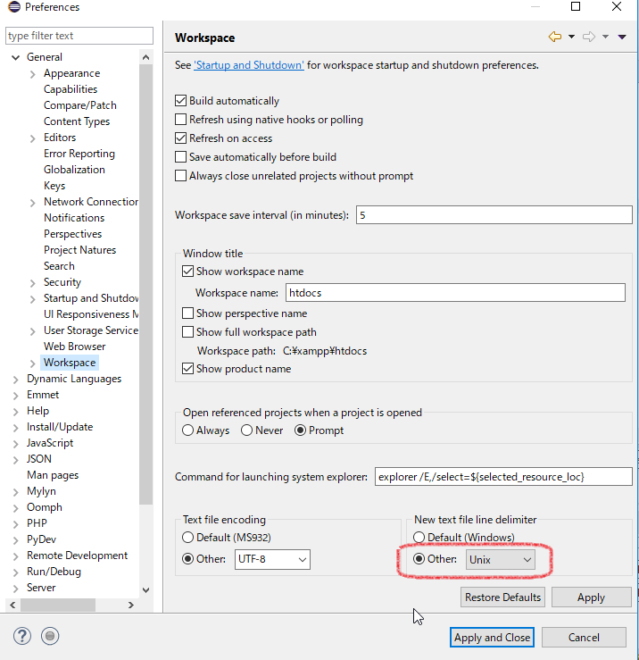
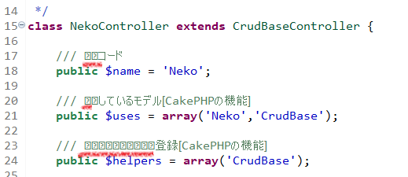
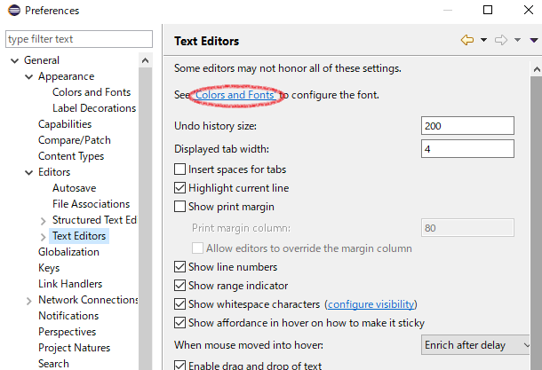
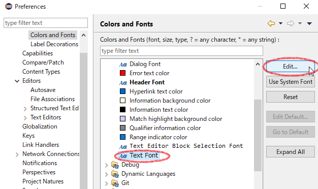
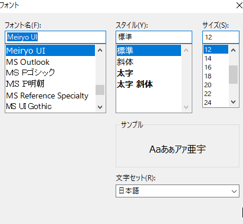
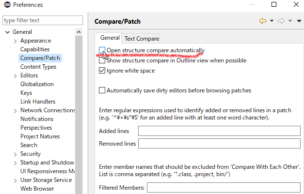
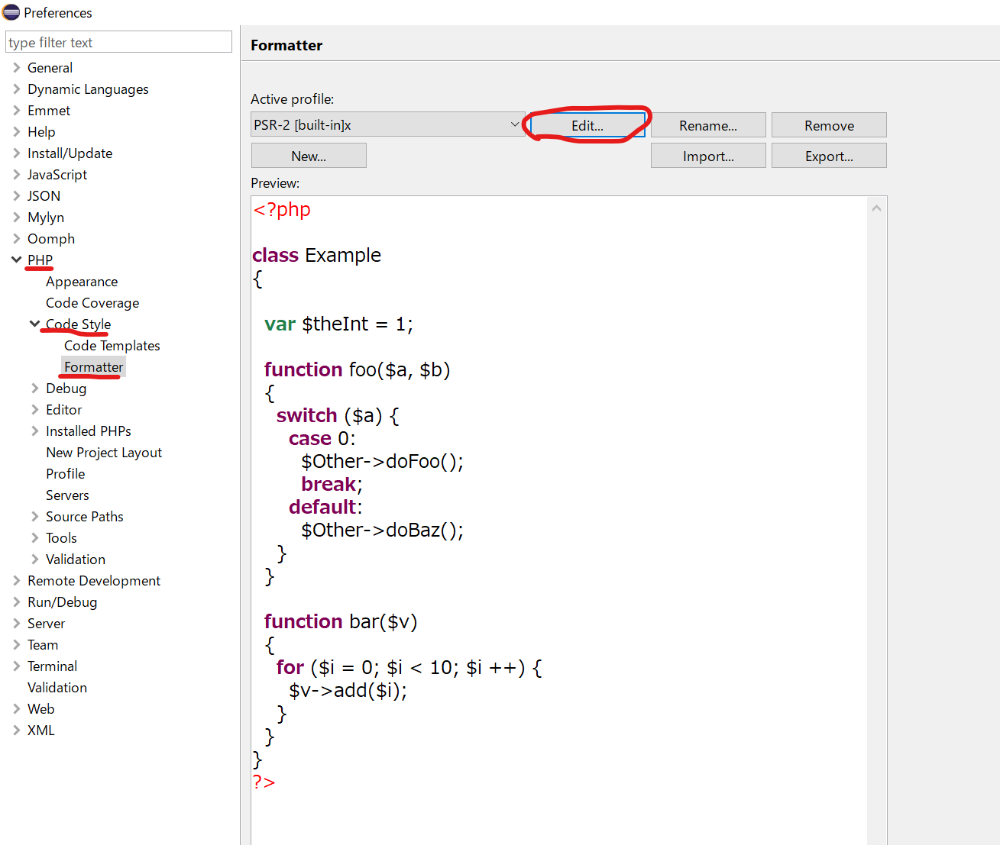
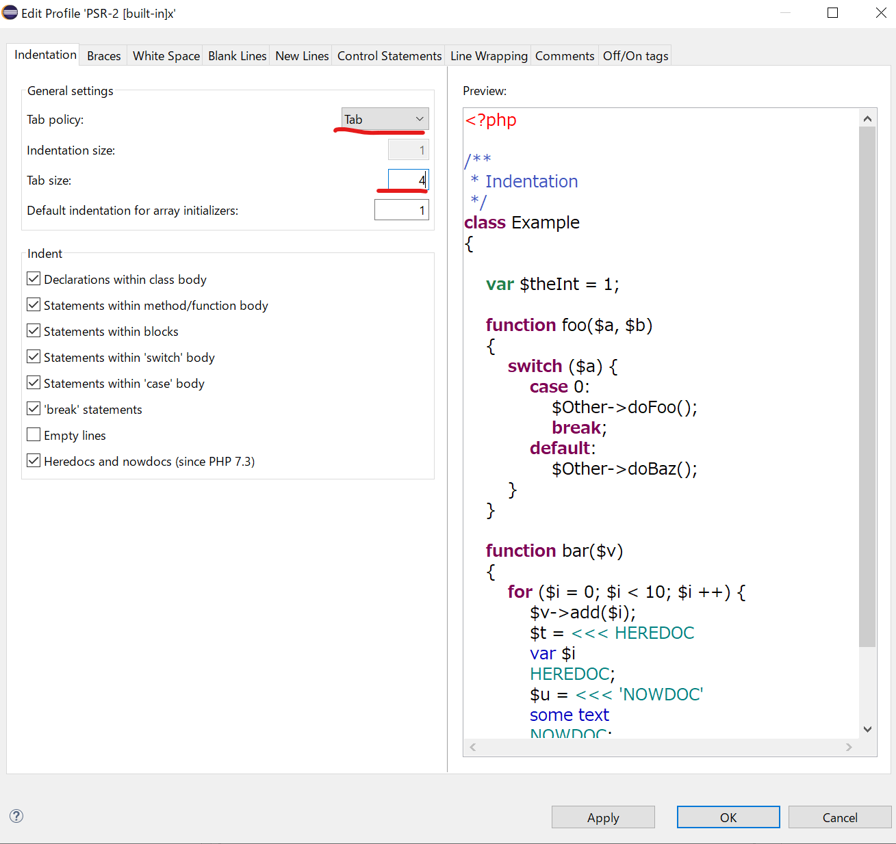

デフォルトの改行を[\n]にする
Windows環境においてデフォルトの改行は「\r\n」になっている。
「\n」に統一しておくと思わぬバグを避けられる。
手順
Window → preference → General → Workplace → New text file line delimiter → Other → Unix

Eclipseプラグイン作成の旧覚書
■IDocument（ドキュメント）
編集対象となるオブジェクトです。テキストの操作、位置の管理、テキストの変更の通知などを行います。
■IDocumentProvider（ドキュメントプロバイダ）
ドキュメントの生成と管理を行います。ドキュメントの変更を監視し、エディタへ通知を行います。また、ブックマークやブレークポイントといったアノテーションの作成も担当します。
■IDocumentPartitioner（ドキュメントパーテーショナ）
ドキュメントを意味的な区域（パーティション）に分割します。パーティションことにコンテンツアシストやシンタックスハイライトといった機能を適用することが可能です。
■SourceViewerConfiguration（ソースビューアコンフィグレーション）
ダブルクリック時の動作、シンタックスハイライト、コンテンツアシストなど、エディタのさまざまな動作をカスタマイズするためのエントリポイントとなるクラスです。
■メニューバーやツールバーに表示される項目を作成
メニューバーやツールバーに表示される項目はplugin.xmlのaction要素で定義
■plugin.xmlについて
プラグインの情報を記述する。
Overview プラグイン全体の情報。配布用アーカイブの作成やランタイム・ワークベンチの起動
Dependencies プラグイン間の依存関係
Runtime エクスポートするパッケージやクラスパスの設定
Extentions プラグインがコントリビュートする拡張ポイントを指定
Extention Points 新たな拡張ポイントを宣言
Build ビルド時にアーカイブに含めるファイルやディレクトリなどを設定
MANIFEST.MF MANIFEST.MFのソースを表示
plugin.xml plugin.xmlのソースを表示
build.properties build.propertiesのソースを表示します
■プラグインのテスト実行
手順
１．パッケージエクスプローラのplugin.xmlをクリック。（マニフェスト・エディタで開く）
２．概要タブをクリック
３．Launch an Eclipse application（日本語：Eclipse アプリケーションの起動）リンクをクリック
動作確認用のEclipseが新規で立ち上がる。
４．動作確認用のEclipseのメニューに「Sample Menu（日本語版：サンプル・メニュー）」があるのでクリック。
５．メニューから開発対象のプラグイン名を選択してクリックすると実行される。
■プロジェクトの作成
「プラグイン・プロジェクト」を選択し、あとはウィザードに従う。
エディター系をプラグインならと中のウィザードで「エディター付きプラグイン」を選択するとよい。
■開発について
プラグインを開発する場合、まず「どの拡張ポイントに対して拡張するか」を決定することから始まります。Eclipseにはデフォルトでも様々な拡張ポイントが用意されています。
例：エディタを作成するのであればエディタ用の拡張ポイントを指定
インクルードするプロジェクトを追加する
PHP Explorer→プロジェクト名・右クリック→property→PHP Include Path→addボタン→インクルードするプロジェクトを追加
これで、他プロジェクトのクラスのコードアシストなどが使える。
Eclipseで特定ファイルのデフォルト文字コードを設定する
Window→設定 → 一般 → コンテンツ・タイプ → 上の項目で「テキスト」を選択 →
下項目の右側にある「追加」ボタンを押す。 →
「*.html」と入力する。 →
デフォルト・エンコードに「utf-8」と入力。 →
適用ボタンを押して完了
コメントのスペースから後ろが文字化けする
UTF8で読み込んでいるのにもかかわらず起こる文字化け。
コメントのスペースから後ろから部分的に文字化けしている。

修正方法
-
Window > Preferences > General > Editors > Text Editors
「Colors and Fonts」をクリックする。

-
一覧から「Text Font」を選択し、「Edit」ボタンを押す。

-
フォント名が「Console」となっているのが文字化けの原因。
別のフォントに変更する。Meiryo UIがおすすめ。

EclipseのCompareが効かなくなった | 比較 → 相互が表示されない
PHPファイルでは比較できるのに、JSファイルでは比較できなくなった場合の修正。
Window > Preferences > General > Compare/Patch
「Open structure compare automatically」のチェックを外しApplyを押す。

PHPのタブスペース設定
-
Window > Preferences > PHP > Code Style > Formatter > Edit(なければ New)

-
Taab policy > Tabを選択 (spaceを選択すると半角スペースになる)
Indentation size > 4を指定
Applyボタン

ダークテーマに切り替え
Window→Preference→General→Appearance
Themeの項目で「Dark」を選択
フォントを変更する
２か所ほど設定する必要がある。
①ウィンドウ→設定→一般→外観→色とフォント→テキストフォント
②ウィンドウ→設定→一般→外観→色とフォント→構造化テキストエディタ
（htmlやphpファイルなど）
xxx
- ホーム
- プログラミングの覚書
- Eclipseの覚書
- Eclipseの覚書